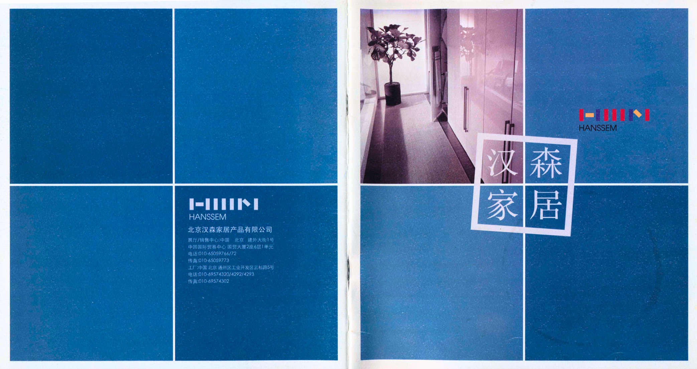
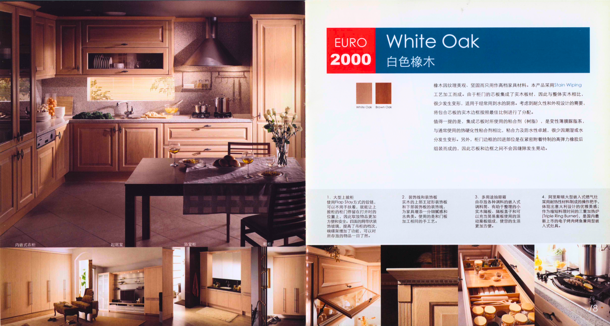
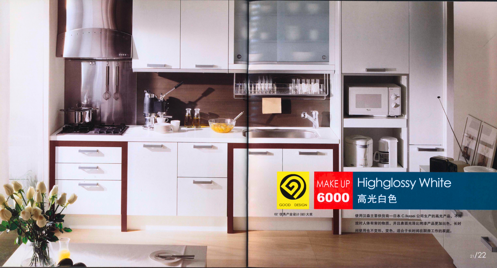
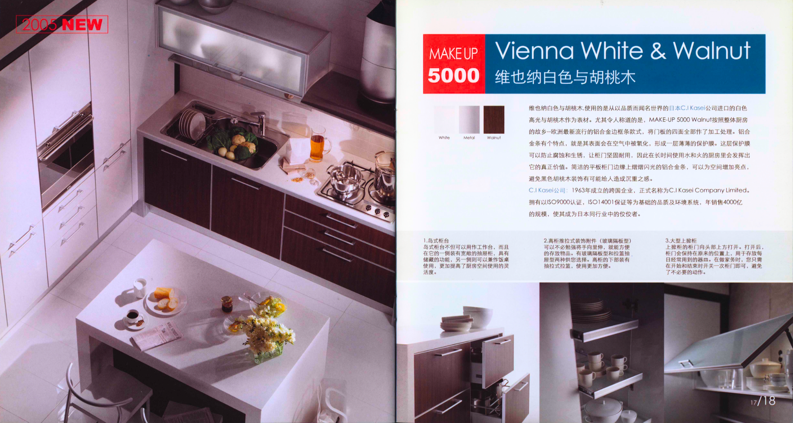
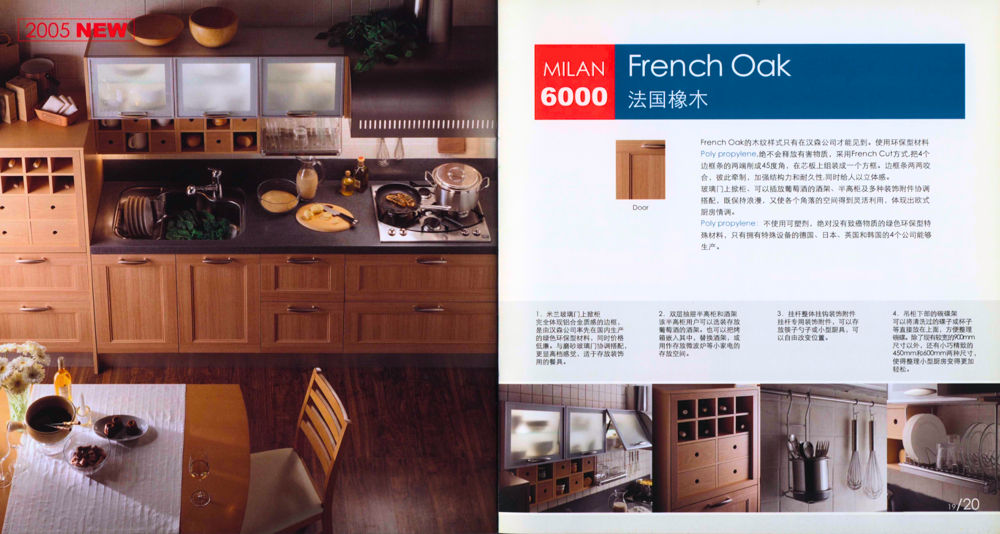
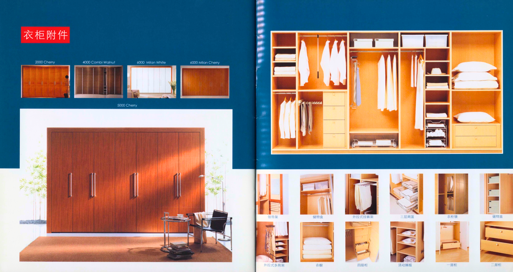

01
Scan
Digitized selected catalog spreads while preserving the original editorial structure and print texture.
Legacy Catalog Digitization · Visual Systems · UX Analysis
A visual and UX-oriented study of a Hanssem interior catalog, exploring how print-based product storytelling, spatial organization, and editorial hierarchy can inform contemporary digital experiences.
Project Overview
This project began with the digitization of an aging Hanssem catalog and evolved into a study of visual systems, interior organization, and UX translation. Rather than treating the catalog as a static archive, the work examines how its layout logic, material storytelling, and modular product presentation can inspire modern interface design.
Process
The process focused on preserving the original character of the catalog while preparing the material for clear digital presentation.
01
Digitized selected catalog spreads while preserving the original editorial structure and print texture.
02
Adjusted alignment, cropping, brightness, and contrast to improve readability without over-polishing the archival feel.
03
Selected spreads that best demonstrate brand consistency, product storytelling, and modular spatial organization.
04
Studied visual hierarchy, navigation patterns, layout systems, and their relevance to modern UX design.
Selected Spreads
Each selected spread highlights a different aspect of interior product communication, from material contrast to storage logic and editorial hierarchy.

A strong brand-led opening using blue geometric rhythm, contrast, and modular visual structure.

Warm material storytelling with balanced hierarchy between lifestyle photography and product details.

A clean, modern-feeling spread that uses contrast and reflective surfaces to communicate refinement.

Material contrast and overhead spatial composition create a clear sense of modular kitchen planning.

Soft editorial warmth, natural texture, and calm hierarchy give the spread a timeless atmosphere.

A clear example of physical information architecture through categorized storage zones and modular components.
Design Insights
The catalog shows how visual hierarchy, modular organization, and spatial storytelling were already solving user-centered problems before those ideas were commonly described as digital UX patterns.
Large lifestyle images establish mood first, while smaller detail modules support practical decision-making.
Cabinets, closets, and kitchen zones function like components arranged into a coherent user experience.
Contents pages, category sequencing, and repeated visual patterns helped users move through complex product options.
Reflection
Good systems are not limited to screens. They can be found in rooms, objects, catalogs, and the way people move through information.